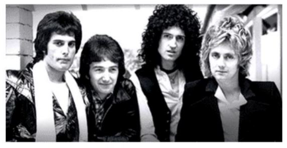

<h2>Queen</h2>
<p>Banda británica de rock formada en 1970 en Londres</p>


<h3>Integrantes del grupo</h3>
<ul>
    <li>Brian May</li>
    <li>Freddie Mercury</li>
    <li>John Deacon</li>
    <li>Roger Taylor</li>
</ul>

<h3>Discografia</h3>
<p>Grandes éxitos de Queen</p>
<table>
<tr>
    <th class="titulo">Año</th>
    <th class="titulo">Disco</th>
</tr>
<tr>
    <td>1975</td>
    <td>A Night at the Opera</td>
</tr>
<tr>
    <td>1986</td>
    <td>A Kind of Magic</td>
</tr>
<tr>
    <td>1989</td>
    <td>The Miracle</td>
</tr>
<tr>
    <td colspan="2" class="ultimo">"Kind of Magic" fue el album más exitoso</td>
</tr>
</table>

<h3>Sitio web oficial</h3>
<a href="https://www.queenonline.com/es">www.queenonline.com/es</a>
<p></p>
